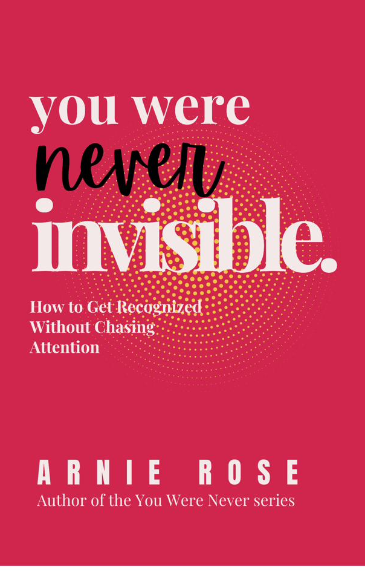

Performed confidence is the kind that needs an audience. It is louder than the situation requires. It is slightly on in every interaction, always managing the impression, always a little more certain-sounding than it actually feels. It is exhausting to maintain and unconvincing to the people who have been around it for more than a few conversations.
Real confidence does not perform. It does not need to. The person who has it is not louder than the room or quieter than the room. They are just present in it. Here is how that kind gets built.
What Confidence Actually Is
Confidence is not the absence of doubt. People who appear confident have doubts. They have fears. They have days where they do not know if what they are doing is right. What they have that produces the appearance of confidence is not a special immunity to uncertainty. It is a willingness to act in the presence of it without requiring the uncertainty to resolve first.
This matters because most people are waiting to feel confident before they act like it. That is the wrong order. Confidence is mostly built by acting before the feeling arrives, not by waiting for the feeling and then acting. The feeling follows the action. It does not precede it. Waiting for it to arrive first is waiting in the wrong place in the sequence.
Why Validation Feels Like Confidence
Validation produces a real, immediate sensation: a brief lift, a relaxing of tension, something that feels close enough to confidence that the two get treated as the same thing. The confusion is understandable. In the moment, approval and confidence can feel identical from the inside.
The difference shows up the moment the approval stops. Confidence built on your own evidence doesn't need the room to confirm it again tomorrow. Confidence built on validation resets the second the validation source goes quiet, which means it has to be re-earned constantly, from whoever happens to be in the room that day. That's not confidence. It's the same dependency that drives shrinking yourself to be accepted, wearing a slightly different costume.
"Confidence is not a feeling you wait for. It is a conclusion you build by accumulating evidence that your judgment can be trusted. That evidence only comes from acting before you feel ready."
Signs Your Confidence Is Performative
- You feel sure of yourself in front of an audience but unsteady the moment you're alone with the same decision.
- Being challenged or questioned triggers defensiveness rather than curiosity, because the challenge threatens the performance, not just the position.
- Social situations that should feel energizing leave you specifically drained, because some part of you was managing an impression the whole time.
- Your confidence level swings dramatically depending on who's in the room, rather than staying roughly consistent regardless of audience.
None of these mean something is wrong with you. They mean the confidence currently running is borrowed rather than built, which is fixable, not permanent. Waiting for permission to feel sure of yourself is one of the most common ways this shows up, and one of the easiest to miss while it's happening.
Build a Record of Kept Promises to Yourself
Self-confidence is not self-esteem. Self-esteem is how you feel about yourself. Self-confidence is how much you trust yourself to do what you say you are going to do. They are different things and they are built differently. You cannot think your way to self-trust. You build it through consistent behavior over time.
The most direct path to real confidence is keeping the small commitments you make to yourself. Not the big ones. The small ones. The ones no one is watching. The 6am run when no one knows you planned it. The page of writing when no one was waiting for it. The difficult email you said you would send today. Each kept promise is one piece of evidence that you are someone who does what they say. That evidence compounds into something you can feel in rooms where the stakes are higher.
This is the same mechanism described in the post on you are still becoming. Who you are is not fixed. It is being built by what you do consistently, including and especially what you do when no one is watching.
Stop competing with your own highlight reel
Confidence collapses when you compare your daily reality to your best moments or to the edited surface of someone else's performance. Neither is a fair comparison. Your best day is not a standard. It is a data point. Someone else's presentation is not their experience. You are comparing your interior to their exterior and concluding the gap is evidence about your inadequacy. It is not. It is evidence about the limits of surface-level information.
As explored in your life is not a competition, the comparison itself is the problem, not your position in it. The only comparison that produces useful information is with who you were at the same task or in the same kind of situation one year ago. That comparison is accurate because the starting conditions are the same person. Everything else is noise wearing the costume of a data point.
The thing performed confidence cannot do
Performed confidence is specifically bad at handling being wrong. When your confidence is a performance, being wrong in public threatens the performance itself. So you defend positions past the point of evidence. You double down when you should acknowledge. You protect the image rather than engage with the reality. Real confidence handles being wrong easily because it is not attached to the image of someone who is never wrong. It is attached to the record of someone who acts, adjusts, and keeps moving. That record does not get damaged by a single wrong call. It gets built by how you respond to it.
Let your competence speak before your presence does
Performed confidence tries to signal value before demonstrating it. It enters a room already at volume, already establishing, already claiming space. Real confidence does something different. It demonstrates value and lets the signal come on its own. Know your subject deeply. Show up prepared when preparation matters. Do the work at a level that people notice. The confidence that comes from genuine competence does not need to announce itself. People feel it in the room before you have said anything particularly impressive.
This does not mean being quiet or passive. It means your first move is demonstration, not declaration. The person who says very little and then says something precise has more impact than the person who says a lot and then says the same thing. Volume is not confidence. Precision is.
Stop apologizing for taking up space
The pre-apology before the opinion. The qualification before the statement. The unnecessary hedge that softens the thing you are about to say before you say it. These habits signal that you believe your presence requires justification. It does not. You are in the room. You are allowed to have the thought. You are allowed to say it without a disclaimer attached to the front of it.
This is not about being aggressive or dismissing other perspectives. It is about removing the signal that you are unsure whether you are allowed to be taking up the space you are in. That signal is picked up. It changes how people relate to what you say. The words are the same but the framing tells people how much weight to give them. Remove the apology and give your own words the weight they deserve.
Think about the last time you pre-apologized for something you were about to say. What were you protecting yourself from? And did removing that protection actually produce the consequence you were trying to avoid?
How Real Confidence Is Built
Put together, the building process is simple to describe even though it takes real time to complete: keep small commitments only you would know about, let demonstrated competence do the talking instead of declared confidence, and stop attaching an apology to your presence in the room. None of these produce confidence overnight. All three compound, the same way any evidence compounds, until the conclusion that your judgment can be trusted stops requiring active belief and becomes simply true.
The Version of You That Stops Performing
There is a version of you that is not managing the impression, not running the calculation about how this is landing, not monitoring the room for signals about whether you are taking up too much or too little space. That version is not more vulnerable. It is less. Because it is not generating the signal that says this person is uncertain whether they belong here. It is generating something quieter and more stable. Presence.
Presence is what performed confidence is trying to simulate. But it cannot simulate it because the simulation requires ongoing effort and the thing being simulated does not. Real confidence is restful in a way that performance is not. You are not building a case for yourself. You are just there.
That does not come from deciding to be confident. It comes from the slow accumulation of kept promises, accurate self-assessment, genuine competence in the things that matter to you, and the gradual removal of the apology from your presence. It takes longer than a technique. It lasts longer too.
What is one small commitment you could make to yourself this week that no one else would know about? And what would it mean for your self-trust if you actually kept it?

You Were Never Invisible is about what happens when you stop trying to be seen and start trusting that your presence is already enough. That shift is where real confidence begins.
Read You Were Never Invisible on Amazon